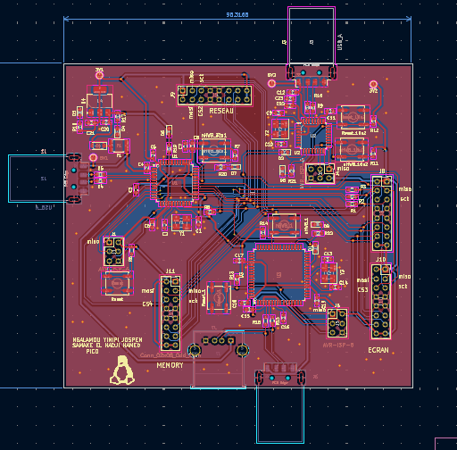
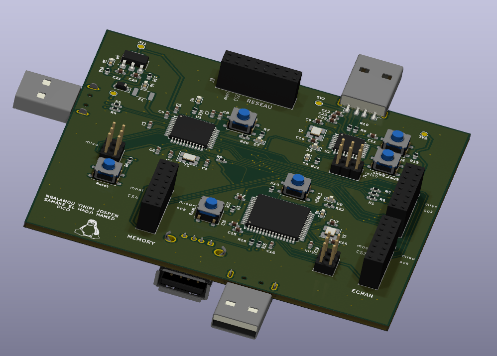
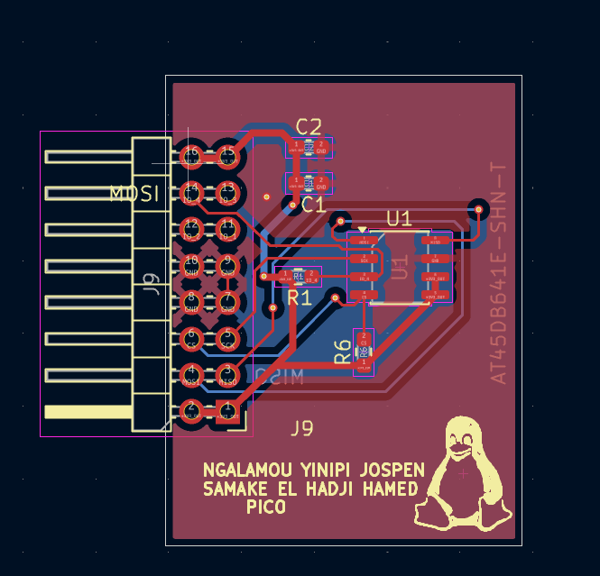
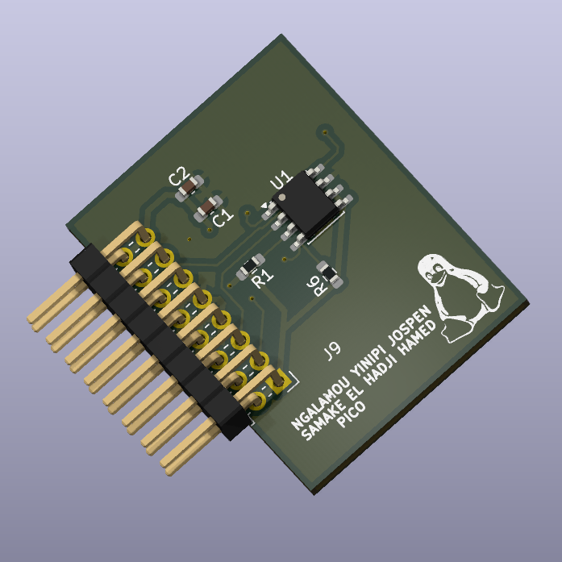
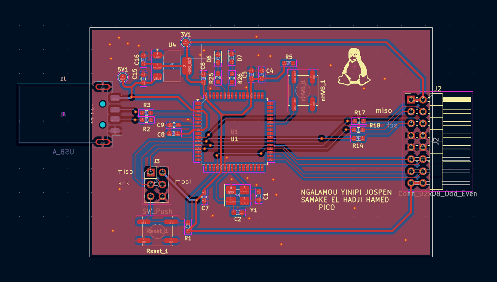
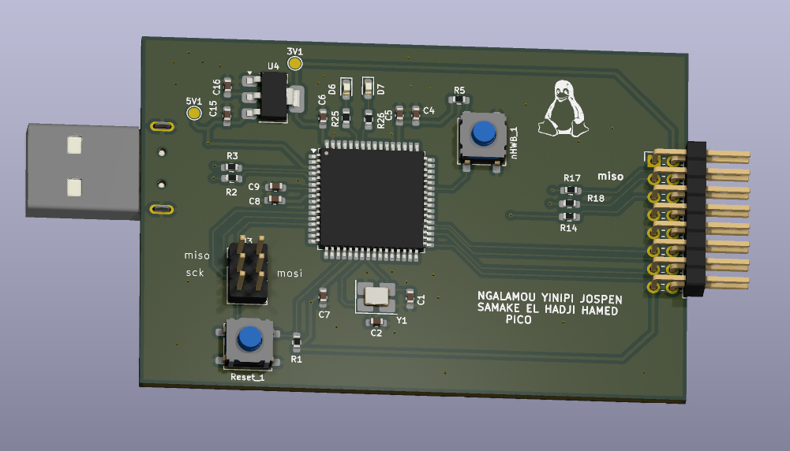
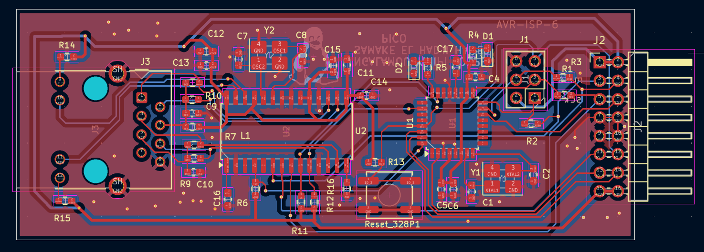
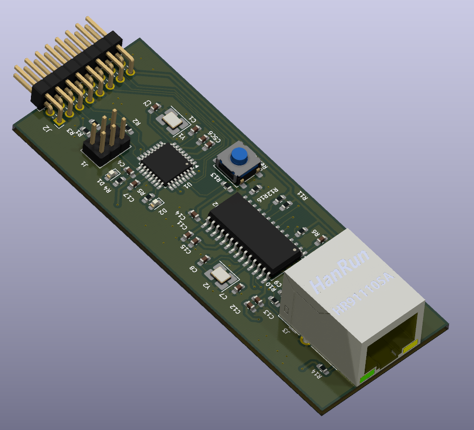
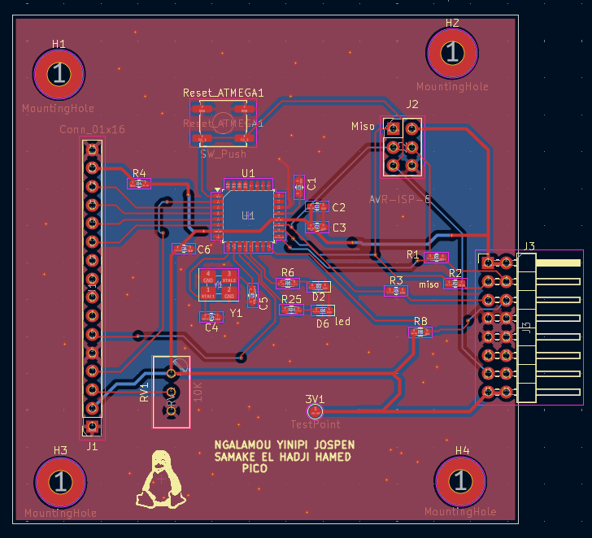
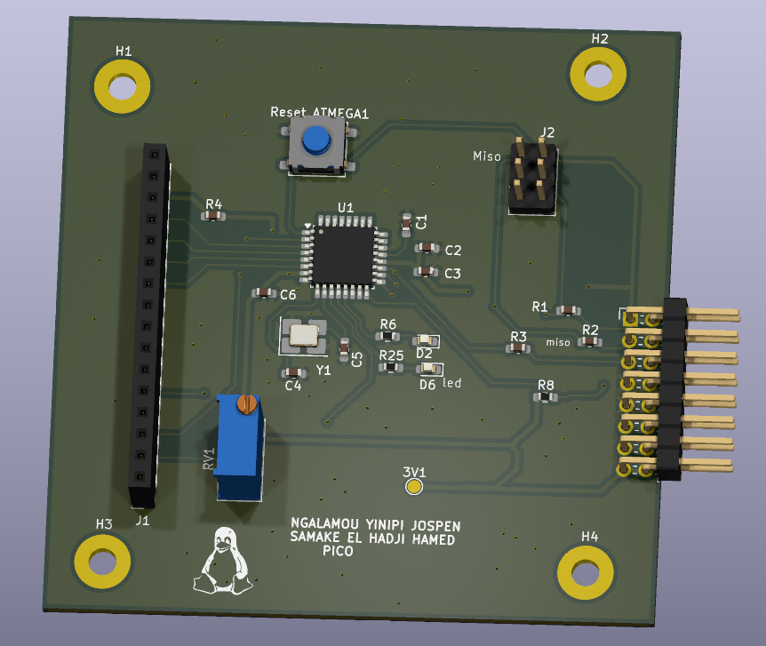

Conception modulaire complète sous KiCad d'un pico-ordinateur architecturé autour d'un ATmega32U4, piloté par une carte mère centrale et ses cartes filles d'extension.
Ce projet de pico-ordinateur représente l'aboutissement d'une démarche rigoureuse en conception de circuits imprimés (EDA). Plutôt qu'un circuit monolithique, j'ai opté pour une architecture modulaire permettant de découpler le cœur de traitement des interfaces de communication et de stockage.
Noyau central de l'architecture, la carte mère intègre le microcontrôleur ATmega32U4, la régulation d'alimentation, les oscillateurs et les bus d'interconnexion. Elle fait l'objet d'un routage double-face soigné pour garantir l'intégrité des signaux USB différentiels et la stabilité des plans de masse.


Sélectionnez un module ci-dessous pour inspecter son routage PCB, sa vue 3D et son schéma schématique associé :
Module d'extension dédié à l'augmentation de la capacité de stockage et à la gestion des flux de données persistants du système.


Interface réseau virtuelle encapsulée sur USB (Remote NDIS) permettant l'émulation d'une liaison TCP/IP filaire haut niveau directement via le port USB.


Module de communication physique RJ45 assurant l'interconnexion réseau filaire standard et le traitement des trames MAC/PHY.


Interface graphique dédiée au retour visuel direct du système pour le monitoring et l'IHM embarquée.


KERNEL PANIC — Hard Fault Exception
------------------------------------------
R0 = 0x00000000 R1 = 0x2000A3F0
R2 = 0x00000001 R3 = 0x08003A10
R12 = 0xDEADBEEF LR = 0x08002F1C
PC = 0x08003A4C xPSR= 0x21000000
CFSR = 0x00008200 HFSR = 0x40000000
>>> Stack overflow detected in task 'main_loop'
>>> System halted.